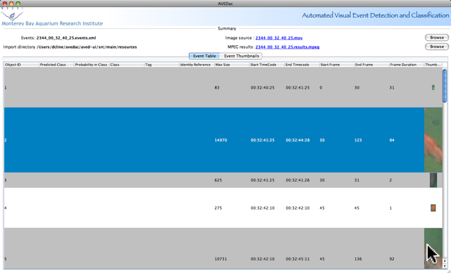

Automated Visual Event Detection and Classification
Quick Start
The AVEDac user interface is intended as a tool for editing events in
an AVEDac genereated XML file. For this tool to be useful, you
need the event XML file generated by the AVEDac event detection
software mbarivision and the original video processed used by mbarivision
to generate the XML file as specified in the XML SourceMetadata
element, either through a web browser, or locally on your computer
Open XML results by selecting Open events from the File menu.
Choose the AVED generated events file. Here the file is 2344_00_32_40_25.events.xml.
Once the file is selected, the import process will begin. Be patient - the import process may take a while for very large files. If a video source was found, you will see the transcoding process begin as well, and see a separate window displaying the transcode output. Important to note is that the transcoding process doesn't need to complete before you can edit your results. Results will be displayed as soon as they are available in both the Thumbnail and Table Views.
If a video source was found and transcoded correctly, you will
see thumbnails of the events in the Event Table , along with the
Class,Tag, Identify Reference, Objec
ID, Maximum Size, and Starting and Ending times for each event.
Predicted class is the name the Classifier assigns to the class
and may be empty; this simply means the classifier has not been run on
this file. The Class, Tag, and Identity Reference may also be empty;
this simply means this event has not been labeled by you.
Opening XML results
Open XML results by selecting Open events from the File menu.
Choose the AVED generated events file. Here the file is 2344_00_32_40_25.events.xml.
Once the file is selected, the import process will begin. Be patient - the import process may take a while for very large files. If a video source was found, you will see the transcoding process begin as well, and see a separate window displaying the transcode output. Important to note is that the transcoding process doesn't need to complete before you can edit your results. Results will be displayed as soon as they are available in both the Thumbnail and Table Views.

The next (optional) step is to label
your events. Do this by right-clicking on any event, then selection
Label Event. Fill in the fields: Species, Class, Tag(optional),
Identify Reference(option). Several events can be labeled at the
same time as well.
Once events are labeled, you can export your results to an Excel spreadsheet. Select File, then Export and choose the filename to save the results to.
Once events are labeled, you can export your results to an Excel spreadsheet. Select File, then Export and choose the filename to save the results to.